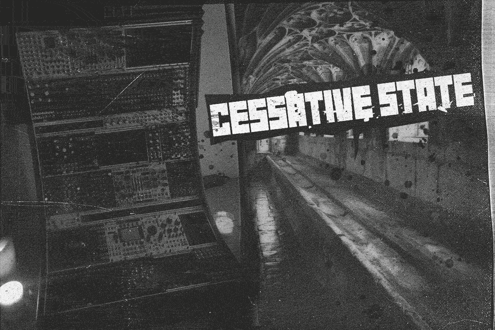
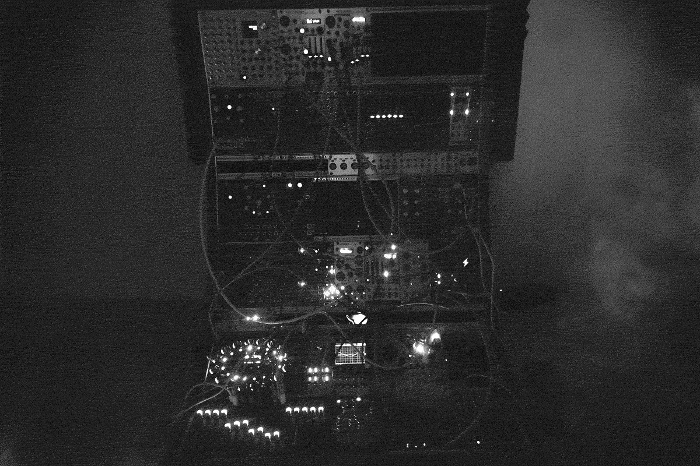
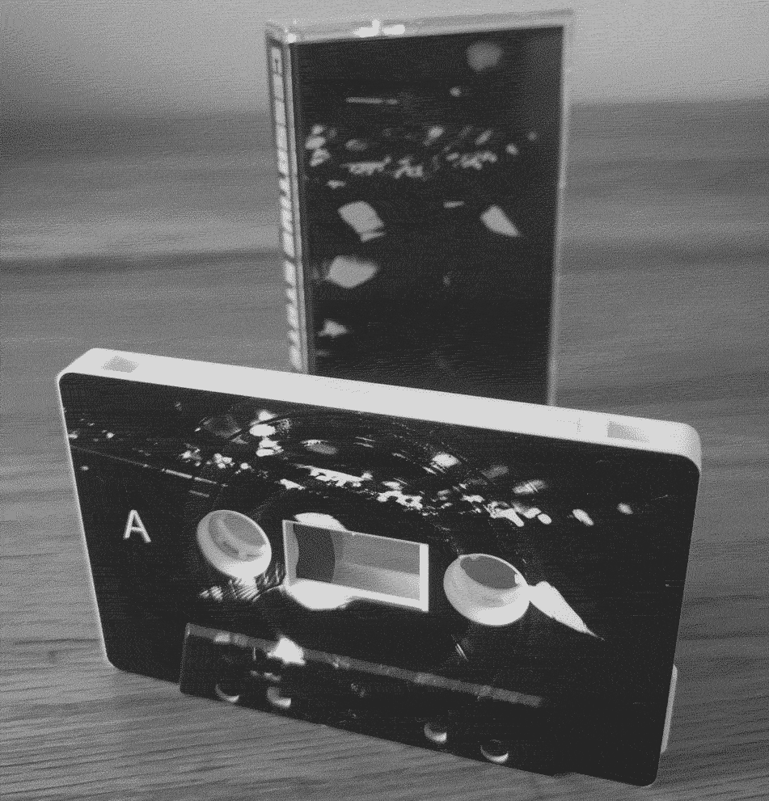

Interview: Cessative State
10/07/2022

Who is Cessative State and what’s the story so far?
Cessative State is a guitarist that started experimenting with electronic music a few years ago. I've tried adding guitar to CS but haven't really been happy with the results. Having said that, there will be at least one guitar-centered track on the next release. I played around with keyed synths for a short spell but soon swapped over to modular. Not understanding what I was doing and disrupting the emotive connection between head and hands a bit was somehow incredibly rewarding. Cessative State is about expressing the darker and more hidden parts of me.
What does your set-up consist of at the moment?
I've just got a new case actually- a 20U 104HP case from John at Synthracks, which is a thing of beauty. I use a 7U 104hp Damaru (big up Elevator Sound) case too and working within a set of restrictions can be a big inspiration. There's some Pulsar 23, Lyra and Ether on Cessative State but pretty much all the sounds are made within Eurorack with relatively few voices.
I've got an incredibly simple recording set-up and mix in the DAW. I'm definitely not a DAWLESS user - it's really important that I'm able to treat each track and have total control over how it all fits together. I use a mix of hardware and software effects; if you want a spring reverb you need a spring reverb! I think there's alot of great effects in Eurorack, especially analogue and granular but when it comes to DSP I lean toward VST's. Expanding my recording set up with some hardware compressors and EQ may come down the line but right now everything post is unashamedly digital and done on a decade old laptop that cost less than some of my modules!
What modules have you found particularly inspiring lately?
It's never ending, isn't it? I could list every brand I use but lately Steady State Fate and Industrial Music Electronics have been inspiring. Triptych, Voritces and Ultrakick are disgustingly good fun. SSF has an elegant and aggressive vibe and the Ultra Kick hits so hard. I wouldn't be without Piston Honda, Hertz Donut and Kermit; they're the foundation of the bass and drone sounds. I'm in love with Assimil8or too and should probably check out more Rossum modules.

Can you tell us a bit about the themes in your releases?
Well, the track titles for CS1 were because I couldn't think of any haha, or at least, it gave me a headache. I find naming the songs one of the hardest things to do - thankfully it's probably one of the least important parts (to me, anyway). I can't say I pay much attention to song names from other artists. I've learned to sketch down how something makes me feel whilst recording and come back to it later. I've got to give a big shout out to John McRitchie who does the artwork. He's a purveyor of the esoteric and just creates the art based of my ramblings.
Have you got any future plans for Cessative State? Live shows? Releases? The CS 1 cassette is great, it would be cool to see some more physical merch.
Thanks! I've considered having cassettes for each of the four releases so far, but I'm still sat on a few from CS1 haha. I'm not sure how I'd do a live show of the recorded material - I'm not sure I could - the destructive nature of Eurorack being its greatest gift! But the idea of performing something improvised runs through my head every now and then. There will definitely be another release this year.
Listen to Cessative State. Follow Cessative State.
